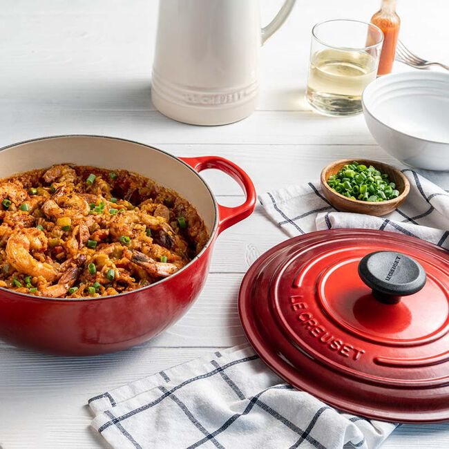

Oven Masters: Crafting Culinary Excellence
Welcome to Oven Masters, where we ignite the passion for cooking with our exceptional Dutch ovens. As connoisseurs of fine cuisine and dedicated artisans, we bring you the epitome of quality and functionality in every product we offer.
Our Story
Born out of a shared love for the art of cooking, Oven Masters was founded in the heart of culinary innovation. With a vision to revolutionize the way people cook and savor meals, our journey began with a simple idea: to create the perfect Dutch oven that embodies both tradition and innovation. From our humble beginnings in a small workshop, we've grown into a renowned name, trusted by chefs and home cooks alike for our commitment to excellence.
Six Reasons Why You Should Shop with us:
- Unmatched Quality: Each Oven Masters Dutch oven is meticulously crafted using the finest materials to ensure durability and performance.
- Verstaile Cooking: From braising and roasting to baking and stewing, our Dutch ovens are designed to handle a wide range of cooking techniques with ease.
- Timeless Design: With timeless aesthetics and thoughtful design features, our Dutch ovens seamlessly blend style with functionality in any kitchen.
- Exceptional Performance: Experience superior heat retention and distribution for consistently delicious results with every dish.
- Customer Satisfaction: We prioritize your satisfaction above all else, providing exceptional customer service and support every step of the way.
- Sustainable Practices: Committed to sustainability, we strive to minimize our environmental footprint through responsible sourcing and manufacturing processes.
Our Guarantee
At Oven Masters, we stand behind the quality of our products. If for any reason you're not completely satisfied with your purchase, simply reach out to us, and we'll make it right. Your satisfaction is our top priority, and we guarantee that our Dutch ovens will exceed your expectations. Cook with confidence knowing that Oven Masters has you covered, every step of the way